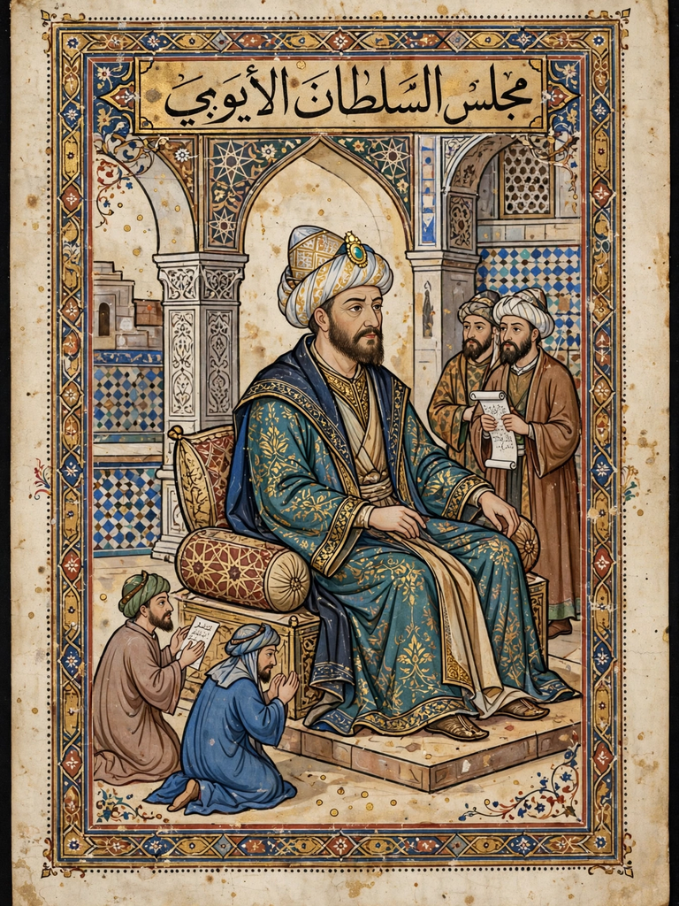

From Wikipedia, the free encyclopedia
| Al-Malik al-Kamil | |
|---|---|
 | |
| Sultan of Egypt | Reign 1218 – 6 March 1238 |
| Predecessor | Al-Adil I |
| Successor | Al-Adil II |
| Born | c. 1177, Cairo, Egypt |
| Died | 6 March 1238, Damascus, Syria |
| Dynasty | Ayyubid |
| Father | Al-Adil I |
Al-Malik al-Kamil Naser ad-Din Abu al-Ma'ali Muhammad (c. 1177 – 6 March 1238), often known simply as al-Kamil, was a Kurdish Muslim ruler and the fourth Ayyubid sultan of Egypt. During his tenure as sultan, the Ayyubids defeated the Fifth Crusade and, through negotiation with Emperor Frederick II, surrendered Jerusalem to the Crusaders in the Treaty of Jaffa (1229).
He was a son of Sultan al-Adil, a brother of Saladin. Al-Kamil inherited the Egyptian throne in 1218, during the Fifth Crusade's siege of Damietta, which he eventually recovered after the Crusaders' disastrous advance on Cairo ended in flooding and surrender in 1221.
When the Crusaders landed in Egypt and took Damietta in 1219, al-Kamil repeatedly offered peace terms, including the return of Jerusalem, which the Crusader leadership under the papal legate Pelagius refused. After the Crusader army advanced toward Cairo in 1221, al-Kamil opened the Nile sluices, flooding the plain and trapping the invaders, who were forced to surrender Damietta in exchange for safe passage.
In 1229, al-Kamil concluded the Treaty of Jaffa with the Holy Roman Emperor Frederick II, whom he had been courting as a counterweight to his Ayyubid rivals. The ten-year treaty returned Jerusalem, Bethlehem, Nazareth, and a corridor to the coast to the Crusaders, while Muslims retained the Temple Mount (Haram al-Sharif) with its mosques. The agreement was controversial on both sides but held for a decade, and the two rulers exchanged gifts and philosophical correspondence.
Al-Kamil spent much of his later reign contesting territory in Syria and the Jazira with his brothers and nephews, capturing Damascus in 1229 and campaigning in Anatolia. He died in Damascus on 6 March 1238 and was succeeded in Egypt by his son al-Adil II.
Categories: 1177 births | 1238 deaths | Ayyubid sultans of Egypt